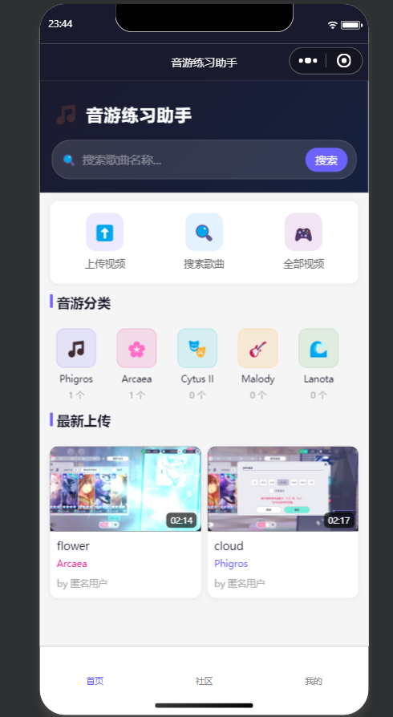
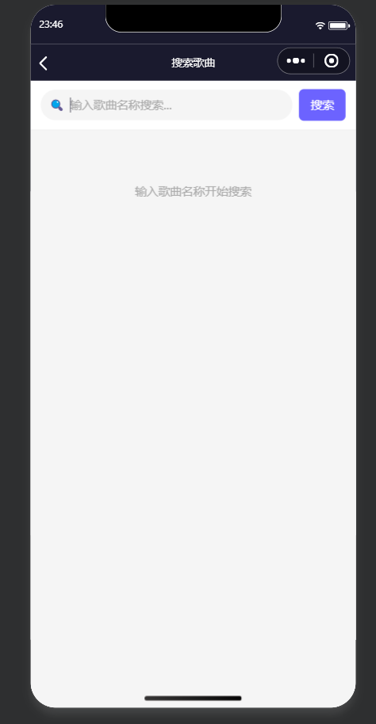
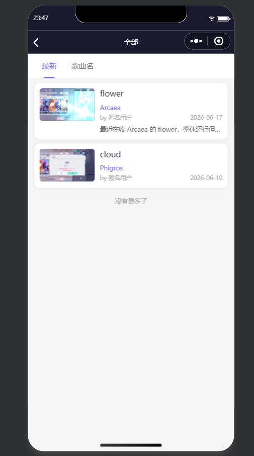
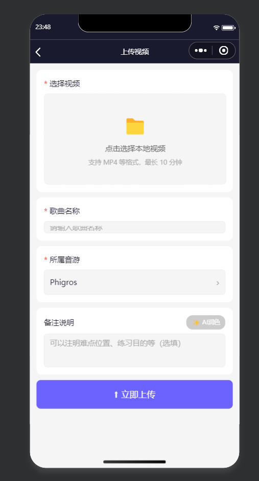
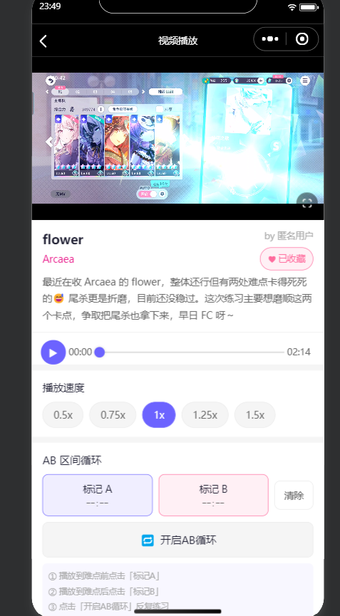
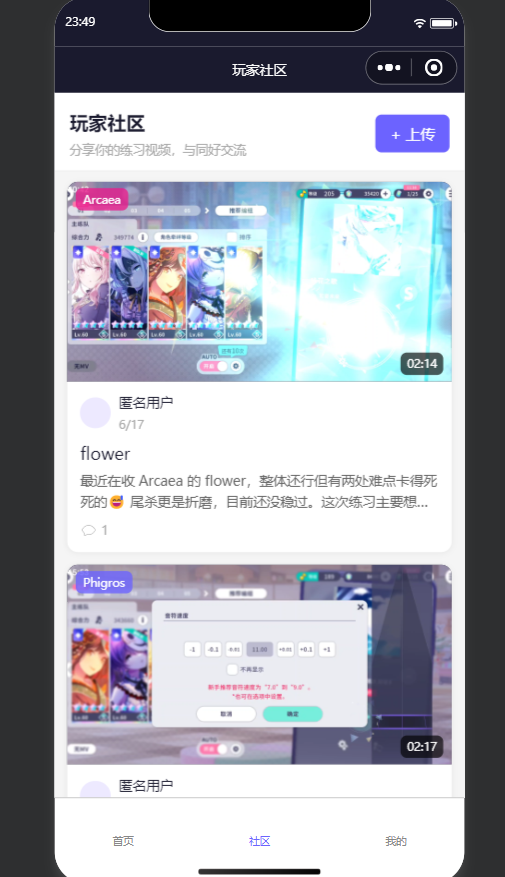
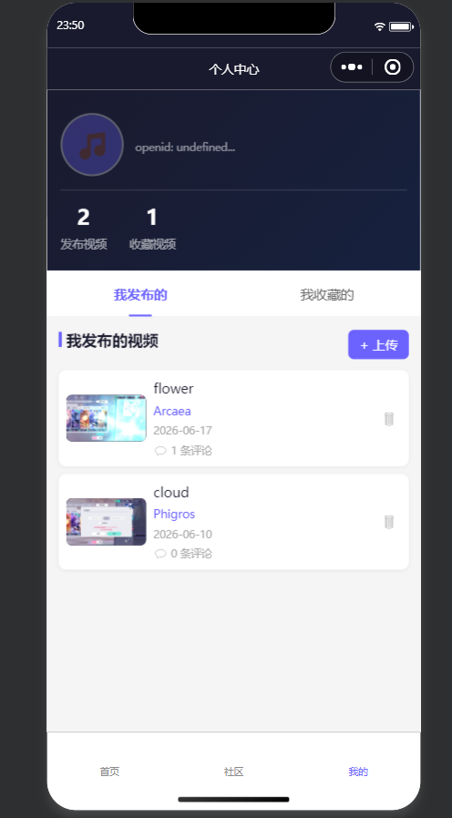

音游（音乐游戏）玩家在练习过程中，经常需要反复观看自己的练习视频，针对特定片段进行针对性训练。现有的视频平台（如 B 站、抖音）并不专门针对音游练习场景设计，缺少 AB 循环、变速播放等练习必备功能。为此，本项目开发了一款基于微信小程序平台的音游视频练习辅助工具，让玩家可以便捷地上传、管理和练习音游视频。
本项目旨在实现以下目标：
本项目选择微信小程序 + 微信云开发的 Serverless 架构，主要基于以下考虑：
通过对音游练习场景的分析，本项目需要实现以下核心功能：
用户打开小程序时，系统自动通过微信云开发的上下文获取用户的 OpenID，完成无声登录。登录后，系统会在云数据库的 user 集合中查询该用户是否存在，如果是首次登录，则自动创建用户记录；如果是重复登录，则更新最后登录时间。整个过程对用户无感知，无需手动登录或授权。
用户可以将本地相册中的练习视频上传到云端。上传时需要填写歌曲名称、选择音游分类、输入视频描述。视频描述支持 AI 润色功能，帮助用户优化表达。上传完成后，视频记录写入云数据库，视频文件和封面图上传到云存储。
用户可以在个人中心查看自己上传的视频，也可以删除不再需要的视频。删除视频时，系统会同步删除云存储中的文件，并更新对应音游分类的视频计数。
视频播放页面是本项目的核心页面，需要实现以下功能：
首页展示预设的 7 个音游分类（Phigros、Arcaea、Cytus II、Malody、Lanota、Dynamix、其他），每个分类显示封面图标和视频数量。点击分类进入分类页，展示该分类下的所有视频，支持分页加载和排序切换（按时间或歌名）。
用户可以在搜索页输入关键词，系统使用正则表达式匹配视频的歌名字段，实现模糊搜索。搜索结果中，匹配的关键词会用高亮颜色（主题色 #6c63ff）加粗显示，方便用户快速定位。
社区页展示所有用户上传的视频，按时间降序排列。用户可以对视频发表评论，也可以收藏喜欢的视频。评论和收藏记录分别存储在 comment 和 favorite 集合中。
用户在上传视频时，可以对视频描述进行 AI 润色。系统调用 TokenHub AI API（hy3-preview 模型），将用户输入的备注优化为更自然、更有趣的音游社区风格表达。润色后的文本会在弹窗中展示，用户可以选择使用或放弃。
本项目采用基于微信小程序和微信云开发的 Serverless 架构，整体分为四层：前端层、接口层、后端层、数据层。系统不需要自建服务器，所有后端服务由微信云开发平台提供。
架构设计的核心思想是：前端通过微信提供的 wx.cloud API 直接与云端交互，部分简单的数据操作（如视频列表查询、评论读取）由前端直接访问云数据库，复杂的业务逻辑（如 AI 润色、评论写入）通过云函数中转处理。
前端层由 7 个页面组成，通过微信小程序的 TabBar 底部导航进行切换。首页、社区、个人中心三个页面常驻 TabBar，分类页、搜索页、上传页、播放页通过导航跳转。
前端层负责用户界面渲染、用户交互处理、数据展示和本地状态管理。前端代码采用微信小程序原生的 WXML、WXSS 和 JavaScript 编写，未使用第三方框架（如 uni-app、Taro 等），以保证最佳的运行性能和最小的包体积。
接口层是前端与云端之间的桥梁，通过微信提供的 wx.cloud API 实现。主要接口包括：
wx.cloud.callFunction()：调用云函数，用于需要后端逻辑处理的场景；wx.cloud.database()：直接操作云数据库，用于简单的数据读写；wx.cloud.uploadFile()：上传文件到云存储；wx.cloud.getTempFileURL()：获取云存储文件的临时 HTTP 链接；wx.cloud.deleteFile()：删除云存储文件。这种设计的优点是：简单的数据操作不需要经过云函数中转，减少了一次网络请求，提高了响应速度；复杂的业务逻辑通过云函数处理，保证了数据安全性和业务规则的集中管理。
后端层由 7 个云函数组成，部署在微信云开发平台上。云函数是无服务器函数，按需执行，按调用次数计费。每个云函数独立部署，可以独立更新和扩展。
云函数的运行环境是 Node.js 22.15.0，每个云函数通过 wx-server-sdk 库访问云数据库和云存储。aiPolish 云函数还需要向外部 TokenHub AI API 发起 HTTPS 请求，因此需要配置出站网络权限。
数据层由云数据库和云存储组成。云数据库是 MongoDB 兼容的文档型数据库，数据以 JSON 格式的文档存储，支持灵活的字段结构。云存储用于存储视频文件和图片，通过文件 ID 进行标识和访问。
系统的数据流可以分为三条主线：
第一条主线：视频上传流程
用户在上传页选择视频和封面，填写信息后点击上传。前端先调用 wx.cloud.uploadFile 将视频文件和封面图上传到云存储，获取文件 ID；然后调用 db.collection('video').add 将视频记录写入云数据库；最后调用 db.collection('game').update 更新对应分类的视频计数。整个流程分为三步，任何一步失败都会终止上传并提示用户。
上传流程的伪代码如下：
function uploadVideo(videoFile, thumbFile, info) {
// 1. 上传视频文件 → 云存储，获取 fileID
const videoRes = await wx.cloud.uploadFile({ cloudPath, filePath })
// 2. 上传封面图（可选）→ 云存储，获取 fileID
if (thumbFile) thumbFileId = (await wx.cloud.uploadFile({ ... })).fileID
// 3. 写入视频记录 → 云数据库
await db.collection('video').add({ data: { songName, videoFileId: videoRes.fileID, thumbFileId, ... } })
// 4. 更新分类视频计数（原子自增）
await db.collection('game').doc(gameId).update({ data: { videoCount: db.command.inc(1) } })
}第二条主线：视频播放流程
用户进入播放页，前端通过 wx.cloud.getTempFileURL 获取视频文件的临时 HTTP 链接，然后将链接设置到视频组件的 src 属性上开始播放。临时链接有有效期（约 2 小时），过期后需要重新获取。评论数据通过 db.collection('comment').where({videoId}).get 直接读取，不需要经过云函数中转。
播放流程的伪代码如下：
function loadVideo(videoId) {
// 1. 查询视频记录
const { data: video } = await db.collection('video').doc(videoId).get()
// 2. 获取临时播放链接（有效期约2小时）
const { fileList } = await wx.cloud.getTempFileURL({ fileList: [video.videoFileId] })
this.setData({ videoUrl: fileList[0].tempFileURL })
// 3. 加载评论列表（按时间降序）
const { data: comments } = await db.collection('comment').where({ videoId }).orderBy('createTime', 'desc').limit(20).get()
}第三条主线：AI 润色流程
用户在上传页输入视频描述后，点击"AI 润色"按钮。前端调用 wx.cloud.callFunction({name: 'aiPolish'})，将原始文本、歌名、音游名传递给云函数。云函数先校验用户登录状态和输入参数，然后拼接 Prompt，向 TokenHub AI API 发起请求。AI 返回润色后的文本后，云函数将原始文本和润色文本一并返回给前端。前端在弹窗中展示润色结果，用户可以选择使用或放弃。
AI 润色流程的伪代码如下：
// 前端调用
function callAIPolish(text, songName, gameName) {
const res = await wx.cloud.callFunction({ name: 'aiPolish', data: { text, songName, gameName } })
if (res.result.code === 0) showModal({ content: res.result.polished })
}
// 云函数：校验 → 拼接Prompt → 调用AI API → 返回润色结果
exports.main = async (event) => {
if (!cloud.getWXContext().OPENID) return { code: -1, msg: '未授权' }
const apiKey = process.env.TOKENHUB_API_KEY // 环境变量读取
const polished = await callAI(apiKey, buildPrompt(event.text, event.songName, event.gameName))
return { code: 0, original: event.text, polished }
}本项目的关键技术选型及理由如下：
本项目使用微信云数据库，它是基于 MongoDB 的文档型数据库。选择文档型数据库的原因是：视频数据的字段相对灵活（不同视频可能有不同的属性），文档型数据库不需要固定的表结构，适合快速迭代开发。
系统共设计 5 个集合，分别是 user、video、comment、game、favorite。以下对每个集合的设计思路进行详细说明。
user 集合用于存储用户基本信息。当用户首次打开小程序时，login 云函数会通过 cloud.getWXContext() 获取用户的 OpenID，然后在 user 集合中查询该 OpenID 是否存在。如果不存在，则创建一条新记录；如果存在，则更新最后登录时间。
集合中包含 open_id 字段作为用户的唯一标识。nick_name 字段默认为"匿名用户"，后续可以扩展为用户自行修改昵称的功能。avatar_url 字段存储用户头像的 URL，当前版本暂未实现头像上传功能，预留该字段以供后续扩展。
user 集合的文档结构如下：
{
"_id": "自动生成的文档ID",
"open_id": "用户的OpenID，唯一标识",
"app_id": "小程序的AppID",
"nick_name": "匿名用户",
"avatar_url": "",
"create_time": "2026-06-01T12:00:00Z",
"last_login_time": "2026-06-28T08:00:00Z"
}video 集合是系统的核心业务集合，存储所有上传的视频记录。每条视频记录包含歌曲名称、所属音游、视频描述、文件 ID、时长、上传者信息等字段。
videoFileId 和 thumbFileId 字段存储云存储的文件 ID，这是永久标识。播放时，前端通过 wx.cloud.getTempFileURL 将文件 ID 转换为临时 HTTP 链接。临时链接不存储在数据库中，因为临时链接有过期时间，每次播放前都需要重新获取。
commentCount 字段记录该视频的评论数，由 addComment 云函数在写入评论时通过 db.command.inc(1) 自增。使用自增操作而不是先查询再更新的好处是，可以避免并发情况下的计数错误。
video 集合的文档结构如下：
{
"_id": "自动生成的文档ID",
"songName": "Spasmodic",
"gameId": "对应的game集合文档ID",
"gameName": "Phigros",
"gameColor": "#6c63ff",
"desc": "FC练习记录",
"videoFileId": "cloud://xxx/videos/xxx/123.mp4",
"thumbFileId": "cloud://xxx/thumbs/xxx/123.jpg",
"duration": 180,
"durationText": "03:00",
"fileSize": 50000000,
"openid": "上传者的OpenID",
"uploaderName": "匿名用户",
"uploaderAvatar": "",
"commentCount": 5,
"createTime": "2026-06-01T12:00:00Z"
}comment 集合存储用户对视频的评论。每条评论记录包含所属视频 ID、评论内容、评论者信息、评论时间等字段。
评论内容的长度限制为 500 字，由 addComment 云函数在服务端校验。昵称长度限制为 30 字，超长的部分会被截断。这些限制的目的是防止恶意用户写入过长的数据，影响数据库性能和存储成本。
comment 集合的文档结构如下：
{
"_id": "自动生成的文档ID",
"videoId": "对应的video集合文档ID",
"content": "太厉害了！",
"open_id": "评论者的OpenID",
"authorName": "音游玩家",
"authorAvatar": "https://xxx/avatar.jpg",
"createTime": "2026-06-01T12:00:00Z"
}game 集合存储音游分类信息。系统预设了 7 个分类，分别是 Phigros、Arcaea、Cytus II、Malody、Lanota、Dynamix、其他。每个分类有名称、图标（emoji）、主题色、排序权重等字段。
videoCount 字段记录该分类下的视频数量，由上传视频和删除视频的操作维护。具体来说，上传视频时，对应分类的 videoCount 自增 1；删除视频时，对应分类的 videoCount 自减 1。
game 集合的文档结构如下：
{
"_id": "自动生成的文档ID",
"name": "Phigros",
"icon": "🎵",
"color": "#6c63ff",
"sort": 1,
"videoCount": 10
}favorite 集合用于存储用户的收藏记录，实现用户和视频之间的多对多关系。每条收藏记录包含视频 ID、用户 OpenID，以及一组冗余字段（歌名、音游名、主题色、文件 ID 等）。
设计冗余字段的原因是：云数据库不支持 JOIN 查询，如果收藏列表需要展示视频的歌名和封面，每次都需要先查询 favorite 集合，再根据视频 ID 查询 video 集合，会增加一次数据库调用。通过冗余存储，收藏列表可以直接从 favorite 集合获取所有需要展示的信息，减少了数据库查询次数。
这种冗余设计在文档型数据库中是一种常见的优化手段，代价是需要在视频信息更新时同步更新 favorite 集合中的冗余字段。在本项目中，视频的歌名和封面不会更新，因此冗余字段的一致性容易保证。
favorite 集合的文档结构如下：
{
"_id": "自动生成的文档ID",
"videoId": "对应的video集合文档ID",
"openid": "收藏者的OpenID",
"songName": "Spasmodic",
"gameName": "Phigros",
"gameColor": "#6c63ff",
"videoFileId": "cloud://xxx/videos/xxx/123.mp4",
"thumbFileId": "cloud://xxx/thumbs/xxx/123.jpg",
"uploaderName": "匿名用户",
"duration": 180,
"durationText": "03:00",
"createTime": "2026-06-01T12:00:00Z"
}系统中的实体关系如下：
在关系型数据库设计中，多对多关系需要一张中间表。本项目中 favorite 集合就起到了中间表的作用，同时利用文档型数据库的特性，在中间表中冗余存储了视频的部分字段，优化了查询性能。
为了提高查询性能，需要在常用查询字段上建立索引：
前端采用微信小程序的原生框架开发，整体结构遵循小程序的标准目录规范。所有页面放在 pages 目录下，每个页面由四个文件组成：.js（逻辑）、.wxml（模板）、.wxss（样式）、.json（配置）。
前端与后端的数据交互有两种方式：简单的数据读写直接通过 wx.cloud.database() 操作云数据库；复杂的业务逻辑通过 wx.cloud.callFunction() 调用云函数。这种混合方式在开发效率和安全性之间取得了平衡。
小程序的全局数据存储在 app.globalData 中，包括用户的 OpenID、用户信息、登录回调等。由于微信云开发的登录是通过云函数异步获取的，页面在加载时可能需要等待登录完成。为此，设计了 loginCallback 机制：如果登录已完成，直接执行回调；如果登录未完成，将回调存入 loginCallback，登录完成后统一执行。
loginCallback 机制的伪代码如下：
// app.js — 异步登录，完成后执行回调
App({
globalData: { openid: null, loginCallback: null },
onLaunch() {
wx.cloud.callFunction({ name: 'login' }).then(res => {
this.globalData.openid = res.result.openid
if (this.globalData.loginCallback) this.globalData.loginCallback()
})
}
})
// 页面中使用：登录完成直接调用，未完成则注册回调
const app = getApp()
if (app.globalData.openid) {
this.loadUserData(app.globalData.openid)
} else {
app.globalData.loginCallback = () => this.loadUserData(app.globalData.openid)
}小程序的主题色为 #6c63ff（紫色），用于 TabBar 选中状态、按钮、高亮文字等。导航栏背景色为 #1a1a2e（深蓝色），与主题色形成对比。页面背景色为 #f5f5f5（浅灰色），确保内容区域清晰可读。
样式设计采用灵活的 CSS 布局，适配不同尺寸的手机屏幕。图标使用微信小程序内置的 icon 组件，部分地方使用 emoji 作为装饰元素，减少图片资源的使用。
首页是用户打开小程序后看到的第一个页面，主要展示音游分类列表和最新上传的视频。
分类列表从 game 集合读取，按 sort 字段升序排列。如果 game 集合为空（首次使用），首页会自动写入预设的 7 个音游分类。这个初始化逻辑放在首页的 onLoad 生命周期中，确保用户在任何页面都能正常看到分类。
分类初始化的伪代码如下：
async loadGames() {
const { data } = await db.collection('game').orderBy('sort', 'asc').get()
if (data.length === 0) {
// 首次使用，写入预设的7个音游分类
const defaultGames = [{ name: 'Phigros', icon: '🎵', color: '#6c63ff', sort: 1, videoCount: 0 }, /* ... */]
for (const game of defaultGames) await db.collection('game').add({ data: game })
// 重新查询并渲染
}
this.setData({ games: data })
}最新视频区域展示最近上传的 6 条视频，按 createTime 降序排列。视频封面通过 wx.cloud.getTempFileURL 获取临时链接后展示。由于临时链接有过期时间，每次页面显示时都需要重新获取。
首页还提供了搜索入口和上传入口，用户可以通过顶部搜索框输入关键词跳转到搜索页，也可以点击上传按钮跳转到上传页。
分类页展示某个音游分类下的所有视频。页面接收 gameId 和 gameName 两个参数，从上一页通过 URL 参数传递过来。
视频列表支持分页加载，初始加载 10 条，用户滚动到页面底部时触发 onReachBottom 事件，加载下一页数据。分页查询通过 skip(page * pageSize) 和 limit(pageSize) 实现。
排序方式可以在"按时间"和"按歌名"之间切换，切换排序方式会重新加载视频列表。排序字段通过 orderBy 方法指定。
搜索页允许用户输入关键词，模糊搜索视频的歌名。搜索使用 db.RegExp 创建正则表达式匹配，options: 'i' 表示不区分大小写。
搜索结果最多返回 30 条，防止输入过于宽泛的关键词时返回过多数据。搜索结果中，匹配的关键词会高亮显示：通过高亮函数将匹配片段用 标签包裹，设置颜色为主题色 #6c63ff。
搜索查询和高亮的核心伪代码如下：
// 正则模糊搜索（不区分大小写）
const { data } = await db.collection('video')
.where({ songName: db.RegExp({ regexp: keyword, options: 'i' }) })
.orderBy('createTime', 'desc').limit(30).get()
// 高亮匹配片段
highlightMatch(text, keyword) {
return text.replace(new RegExp(`(${keyword})`, 'gi'), '<b style="color:#6c63ff">$1</b>')
}搜索框支持实时搜索，用户输入时自动触发搜索。为了避免频繁触发数据库查询，实际实现中可以加入防抖处理（当前版本未实现，可作为后续优化方向）。
上传页是功能最复杂的页面之一，需要完成视频选择、封面选择、信息填写、AI 润色、视频上传、数据写入等一系列操作。
视频选择通过 wx.chooseMedia API 实现，限制仅从相册选择，最大时长 10 分钟。选择视频后，前端通过视频文件的元数据获取时长和文件大小，用于展示和存储。
AI 润色功能在用户点击"AI 润色"按钮时触发。前端先检查用户是否输入了描述文本，然后调用 aiPolish 云函数。调用时设置了 20 秒的超时时间（云函数的超时时间也是 20 秒）。润色结果在弹窗中展示，用户可以选择使用润色后的文本，也可以继续使用原始文本。
上传过程分为三步：第一步上传视频文件到云存储，第二步上传封面图到云存储（可选），第三步将视频记录写入云数据库。这三步按顺序执行，任何一步失败都会终止上传并提示用户。上传进度通过 uploadStep 和 uploadProgress 两个状态变量跟踪，在界面上展示当前的上传阶段和进度百分比。
上传流程的核心伪代码如下：
async doUpload() {
// 步骤1：上传视频文件到云存储
const videoRes = await wx.cloud.uploadFile({ cloudPath: `videos/${openid}/${ts}.mp4`, filePath })
// 步骤2：上传封面图（可选）
let thumbFileId = ''
if (this.data.thumbFile) {
const thumbRes = await wx.cloud.uploadFile({ cloudPath: `thumbs/${openid}/${ts}.jpg`, filePath })
thumbFileId = thumbRes.fileID
}
// 步骤3：写入视频记录到云数据库
await db.collection('video').add({ data: { songName, gameId, videoFileId: videoRes.fileID, thumbFileId, ... } })
// 步骤4：更新分类视频计数（原子自增）
await db.collection('game').doc(gameId).update({ data: { videoCount: db.command.inc(1) } })
}播放页是音游练习的核心页面，实现了 AB 循环和变速播放两个关键功能。
变速播放的实现原理：通过视频组件的 playbackRate 属性设置播放速度。用户点击速度切换按钮时，直接修改 playbackRate 的值，视频播放速度会立即变化。当前播放速度以状态变量的形式存储，在界面上高亮显示当前速度。
AB 循环的实现原理：用户点击"标记 A 点"按钮时，记录当前播放时间作为 A 点；点击"标记 B 点"按钮时，记录当前播放时间作为 B 点。A 点必须小于 B 点，系统会做校验。开启循环后，系统启动一个定时器，每 200 毫秒检查一次当前播放时间。如果当前播放时间大于等于 B 点，则将播放时间跳回到 A 点，实现循环效果。定时器的间隔设为 200 毫秒是在响应速度和性能之间取得平衡：间隔太短会频繁触发 seek 操作，影响性能；间隔太长会导致循环不够精准，影响练习效果。
清除 AB 点的功能会停止定时器，清除 A 点和 B 点的记录，恢复正常的播放模式。
AB 循环和变速播放的核心伪代码如下：
// 变速播放：直接设置 playbackRate
changeRate(e) {
this.videoCtx.playbackRate = parseFloat(e.currentTarget.dataset.rate)
}
// 标记 A/B 点（含先后顺序校验）
setPointA() { this.setData({ pointA: this.videoCtx.currentTime }) }
setPointB() { this.setData({ pointB: this.videoCtx.currentTime }) }
// 开启循环：跳到A点，启动200ms定时检测
toggleLoop() {
if (this.data.isLooping) {
clearInterval(this.loopTimer)
} else {
this.videoCtx.seek(this.data.pointA)
this.loopTimer = setInterval(() => {
if (this.videoCtx.currentTime >= this.data.pointB) {
this.videoCtx.seek(this.data.pointA) // 回到A点
}
}, 200)
}
}播放页还实现了评论展示和发表功能。评论列表分页加载，按时间降序排列。发表评论时，直接往 comment 集合写入记录，然后刷新评论列表。
收藏功能通过查询 favorite 集合中是否存在对应的记录来判断当前视频是否已被收藏。点击收藏按钮时，如果已收藏则删除记录，如果未收藏则添加记录。
收藏功能的核心伪代码如下：
// 查询是否已收藏
async checkFavorite(videoId) {
const { data } = await db.collection('favorite').where({ videoId, openid }).limit(1).get()
this.setData({ isFavorite: data.length > 0 })
}
// 切换收藏状态
async toggleFavorite() {
if (this.data.isFavorite) {
await db.collection('favorite').doc(this.data.favoriteId).remove()
} else {
// 写入收藏记录（含冗余字段：歌名、封面等，避免二次查询）
await db.collection('favorite').add({ data: { videoId, openid, songName, videoFileId, ... } })
}
this.setData({ isFavorite: !this.data.isFavorite })
}社区页展示所有用户上传的视频，按时间降序排列。与首页的"最新视频"不同，社区页展示所有视频，而不仅是最近的 6 条。社区页也支持分页加载，滚动到页面底部时自动加载更多。
社区页的顶部有一个上传按钮，方便用户快速跳转到上传页。
个人中心页展示用户信息和两个 Tab：我的视频、我的收藏。
我的视频 Tab 展示当前用户上传的所有视频，通过 db.collection('video').where({openid}) 查询。用户可以删除自己上传的视频，删除时会弹出确认对话框，确认后执行删除操作。删除视频需要完成三个步骤：删除数据库记录、更新分类视频计数、删除云存储文件。这三个步骤在当前版本中是顺序执行的，如果中间步骤失败，可能会导致数据不一致（可作为后续优化方向，引入事务机制）。
删除视频的核心伪代码如下：
async deleteVideo(e) {
const { videoId, gameId, videoFileId, thumbFileId } = e.currentTarget.dataset
if (!(await wx.showModal({ content: '确定删除？' })).confirm) return
// 三步顺序执行：删除记录 → 更新计数 → 删除云存储
await db.collection('video').doc(videoId).remove()
await db.collection('game').doc(gameId).update({ data: { videoCount: db.command.inc(-1) } })
await wx.cloud.deleteFile({ fileList: [videoFileId, thumbFileId].filter(Boolean) })
}我的收藏 Tab 展示当前用户收藏的所有视频，通过 db.collection('favorite').where({openid}) 查询。由于 favorite 集合设计了冗余字段，收藏列表可以直接展示视频的歌名、封面等信息，不需要再查询 video 集合。
前端代码中抽取了几个公共函数，在多个页面中复用：
fillThumbUrls 的核心伪代码如下：
async fillThumbUrls(videoList) {
const fileList = videoList.filter(v => v.thumbFileId).map(v => v.thumbFileId)
const { fileList: res } = await wx.cloud.getTempFileURL({ fileList })
// 将临时链接映射回视频列表
const urlMap = {}; res.forEach(item => urlMap[item.fileID] = item.tempFileURL)
return videoList.map(v => ({ ...v, thumbUrl: urlMap[v.thumbFileId] || '' }))
}function formatDuration(seconds) {
const min = Math.floor(seconds / 60)
const sec = Math.floor(seconds % 60)
return `${String(min).padStart(2, '0')}:${String(sec).padStart(2, '0')}`
}function formatTime(date) {
const now = Date.now()
const diff = now - new Date(date).getTime()
const minute = 60 * 1000
const hour = 60 * minute
const day = 24 * hour
if (diff < minute) return '刚刚'
if (diff < hour) return Math.floor(diff / minute) + '分钟前'
if (diff < day) return Math.floor(diff / hour) + '小时前'
if (diff < 7 * day) return Math.floor(diff / day) + '天前'
return new Date(date).toLocaleDateString()
}后端采用微信云开发的云函数实现。云函数是无服务器函数，代码部署在微信云开发平台上，按需执行。每个云函数是一个独立的 Node.js 模块，通过 wx-server-sdk 库访问云数据库和云存储。
云函数的优点是无需管理服务器，自动扩缩容，按调用次数计费。缺点是执行时间有限制（默认 10 秒，最长可配置为 20 秒），不适合处理耗时较长的任务。对于 AI 润色这种可能需要较长响应时间的操作，将 aiPolish 云函数的超时时间配置为 20 秒。
login 云函数负责用户登录与初始化。函数首先通过 cloud.getWXContext() 获取用户的 OpenID，然后在 user 集合中查询该 OpenID 是否存在。
如果不存在，则创建一条新用户记录，包含 OpenID、AppID、默认昵称"匿名用户"、注册时间和最后登录时间。注册时间和最后登录时间都使用 db.serverDate() 获取服务器时间，确保时间准确性，避免客户端时间不准确的问题。
如果已存在，则更新最后登录时间。最后返回用户的 OpenID 和完整用户信息。
login 云函数需要在服务端记录请求耗时和异常信息，便于后续监控和排查问题。所有日志以 JSON 格式输出，包含时间戳、日志级别、服务名称、消息内容、请求耗时等字段。
login 云函数的核心伪代码如下：
exports.main = async (event, context) => {
const openid = cloud.getWXContext().OPENID
const { data } = await db.collection('user').where({ open_id: openid }).limit(1).get()
if (data.length === 0) {
// 首次登录：创建用户记录（含 open_id、昵称、时间等字段）
const { _id } = await db.collection('user').add({ data: { open_id: openid, ... } })
userInfo = await db.collection('user').doc(_id).get()
} else {
// 重复登录：更新最后登录时间
await db.collection('user').doc(data[0]._id).update({ data: { last_login_time: db.serverDate() } })
}
// 结构化日志记录（含耗时）
log('INFO', 'login', '登录成功', { openid, durationMs: Date.now() - startTime })
return { openid, userInfo }
}getVideos 云函数用于分页查询视频列表。函数接收 gameId（分类过滤）、page（页码）、pageSize（每页条数）、sortBy（排序字段）、keyword（搜索关键词）等参数。
参数校验是保证接口安全性的重要环节。page 参数限制在 0 到 100 之间，pageSize 限制在 1 到 50 之间，防止恶意用户通过设置过大的 pageSize 导致数据库查询缓慢。sortBy 参数通过白名单机制校验，只能取 createTime 或 songName，防止 SQL 注入（虽然云数据库不使用 SQL，但良好的参数校验习惯仍然必要）。keyword 参数会做 trim 处理，并限制最大长度为 50 字。
查询条件通过 db.collection('video').where() 构建。如果指定了 gameId，则添加 gameId 过滤条件；如果指定了 keyword，则使用 db.RegExp 创建正则匹配条件。查询结果按 sortBy 字段排序，通过 skip(page * pageSize) 和 limit(pageSize) 实现分页。
函数返回视频列表、总数和是否有更多数据的标志。前端根据 hasMore 标志决定是否继续加载下一页。
getVideos 云函数的核心伪代码如下：
exports.main = async (event, context) => {
// 参数校验：page(0~100)、pageSize(1~50)、sortBy(白名单)、keyword(限50字)
let query = db.collection('video')
if (gameId) query = query.where({ gameId })
if (keyword) query = query.where({ songName: db.RegExp({ regexp: keyword, options: 'i' }) })
const { total } = await query.count()
const { data } = await query.orderBy(sortBy, 'desc').skip(page * pageSize).limit(pageSize).get()
return { code: 0, data, total, hasMore: (page + 1) * pageSize < total }
}addComment 云函数用于发表评论。函数在执行前会做多项校验：
第一，校验用户登录状态。通过 cloud.getWXContext() 获取 OpenID，如果 OpenID 为空，说明用户未登录，拒绝执行。这是防止未登录用户发表评论的安全措施。
第二，校验参数完整性。videoId 和 content 是必填参数，如果为空，返回错误信息。
第三，校验参数长度。content 不超过 500 字，authorName 不超过 30 字。超长的 authorName 会被截断，超长的 content 会被拒绝。
校验通过后，函数向 comment 集合写入一条评论记录，然后更新 video 集合中对应视频的 commentCount 字段（自增 1）。commentCount 的自增通过 db.command.inc(1) 实现，这是云数据库提供的原子操作，可以避免并发情况下的计数错误。
addComment 云函数的核心伪代码如下：
exports.main = async (event, context) => {
const openid = cloud.getWXContext().OPENID
// 三层校验：登录状态、参数完整性、参数长度(500字/30字)
if (!openid) return { code: -1, message: '未授权调用，请先登录' }
if (!event.videoId || !event.content) return { code: -1, message: '参数不完整' }
if (event.content.length > 500) return { code: -1, message: '评论长度不能超过500字' }
// 写入评论 + 原子自增计数
const { _id } = await db.collection('comment').add({ data: { videoId, content, open_id: openid, ... } })
await db.collection('video').doc(videoId).update({ data: { commentCount: db.command.inc(1) } })
return { code: 0, id: _id }
}getComments 云函数用于查询某视频的评论列表。函数接收 videoId、page、pageSize 等参数，参数校验规则与 getVideos 类似。
查询结果按 createTime 降序排列，即最新的评论显示在前面。分页方式与 getVideos 相同，通过 skip 和 limit 实现。
aiPolish 云函数是本项目中技术含量最高的后端模块，负责调用外部 AI API 对用户输入的文本进行润色。
函数在执行前会做以下校验：
第一，校验用户登录状态，防止未登录用户调用 AI 功能，避免滥用。
第二，校验 API Key 配置。TOKENHUB_API_KEY 通过环境变量读取，如果环境变量未配置，返回"服务配置错误"提示，并禁用前端的 AI 润色按钮。将 API Key 放在环境变量中而不是硬编码在代码里，是信息安全的基本要求，防止代码泄露导致 API Key 被盗用。
第三，校验输入参数。text 不能为空，且长度不超过 200 字，防止过长的输入导致 AI API 费用过高。
校验通过后，函数拼接 Prompt。Prompt 分为两部分：System Prompt 和 User Prompt。System Prompt 定义了 AI 的角色和行为规则，包括保持用户原意、使用音游术语、控制字数范围、适当使用 emoji 等。User Prompt 包含用户的原始文本、歌名和音游名，为 AI 提供上下文信息。
拼接好的 Prompt 通过 HTTPS POST 请求发送到 TokenHub AI API。请求设置 15 秒超时，防止 AI API 响应过慢导致云函数超时。云函数的超时时间配置为 20 秒，请求的超时时间配置为 15 秒，留出 5 秒的缓冲时间用于处理响应和返回结果。
aiPolish 云函数的核心伪代码如下：
// Prompt 拼接：System Prompt 定义角色规则，User Prompt 提供上下文
function buildPrompt(text, songName, gameName) {
const systemPrompt = `你是音游社区的写作助手。请润色练习备注：
保持原意/语气自然/加入音游术语/保留关键信息/控制50-150字/适当emoji`
const userPrompt = `歌名：${songName}\n音游：${gameName}\n备注：${text}`
return { systemPrompt, userPrompt }
}
// 调用 TokenHub AI API（HTTPS POST，15秒超时）
function callAI(apiKey, systemPrompt, userPrompt) {
return new Promise((resolve, reject) => {
const req = https.request({ hostname: 'api.tokhubai.com', timeout: 15000, /* headers */ }, (res) => {
// 解析响应，提取 choices[0].message.content
})
req.on('timeout', () => reject({ code: -4, msg: 'AI润色失败：请求超时' }))
req.write(JSON.stringify({ model: 'hy3-preview', messages: [...] }))
req.end()
})
}
exports.main = async (event, context) => {
// 三层校验：登录状态、API Key 环境变量、输入参数(非空+200字限制)
if (!cloud.getWXContext().OPENID) return { code: -1, msg: '未授权调用' }
const apiKey = process.env.TOKENHUB_API_KEY
if (!apiKey) return { code: -1, msg: '服务配置错误' }
const { systemPrompt, userPrompt } = buildPrompt(event.text, event.songName, event.gameName)
const polished = await callAI(apiKey, systemPrompt, userPrompt)
return { code: 0, original: event.text, polished }
}AI API 返回的结果是一个 JSON 格式的响应，函数从中提取润色后的文本，然后返回给前端。如果 AI API 返回错误，函数根据错误类型返回不同的错误码：API 返回错误为 -2，响应格式异常为 -3，网络超时为 -4。
错误信息不暴露内部细节，例如不返回具体的 API 错误信息，只返回"AI 服务返回错误"这样的通用提示，防止攻击者通过错误信息推断系统内部配置。
health 云函数用于健康检查，主要供运维人员确认服务状态。函数检查两项内容：数据库连通性和环境变量配置。
数据库连通性检查通过查询 user 集合（限制返回 1 条）实现。如果查询成功，说明数据库正常；如果查询失败，说明数据库连接有问题。
环境变量配置检查通过读取 process.env.TOKENHUB_API_KEY 实现，检查该环境变量是否存在。
检查结果以 JSON 格式返回，包含服务状态、时间戳、版本号、运行环境、各项检查的结果等信息。
health 云函数的核心伪代码如下：
exports.main = async (event, context) => {
try {
await db.collection('user').limit(1).get() // 检查数据库连通性
return {
code: 0,
data: {
status: 'healthy',
timestamp: new Date().toISOString(),
checks: { database: 'connected', envVars: { TOKENHUB_API_KEY: !!process.env.TOKENHUB_API_KEY } }
}
}
} catch (err) {
return { code: -1, msg: '健康检查失败', error: err.message }
}
}为了保证日志的可读性和可分析性，所有云函数统一使用结构化日志规范。结构化日志以 JSON 格式输出，每条日志包含时间戳、日志级别、服务名称、消息内容等固定字段，以及根据场景不同的扩展字段。
日志级别分为三级：INFO、WARN、ERROR。INFO 用于记录正常的操作流程，如请求开始、成功完成等；WARN 用于记录非致命的异常情况，如未授权调用、参数异常等；ERROR 用于记录错误情况，如数据库操作失败、API 调用失败等。
扩展字段根据场景添加。例如，记录请求耗时的日志会添加 durationMs 字段；记录错误的日志会添加 error 字段，存储具体的错误信息。结构化日志便于后续的日志采集和分析，可以通过日志分析工具统计请求量、错误率、平均响应时间等指标。
结构化日志的代码示例如下：
// 统一日志工具：JSON格式输出，含时间戳/级别/服务名/消息/扩展字段
function log(level, service, msg, extra = {}) {
console.log(JSON.stringify({ timestamp: new Date().toISOString(), level, service, msg, ...extra }))
}
// 使用示例
log('INFO', 'login', '登录成功', { openid, durationMs: 150 })
log('ERROR', 'aiPolish', 'AI调用失败', { error: 'timeout' })每个云函数目录下需要有一个 config.json 配置文件，用于配置云函数的运行参数。主要配置项包括：
AI 润色功能的设计目标是帮助用户优化视频备注的表达，使其更自然、更有趣，符合音游社区的风格。
功能的使用场景是：用户在上传视频时，输入一段练习备注（例如"今天终于 FC 了 Spasmodic"），然后点击"AI 润色"按钮，系统调用 AI 模型对备注进行润色，返回润色后的文本。润色后的文本在弹窗中展示，用户可以选择使用或放弃。
Prompt 工程是 AI 功能的核心，直接影响润色效果。本项目的 Prompt 设计遵循以下原则：
System Prompt 定义了 AI 的角色为"音游社区的写作助手"，并规定了七条行为规则：
第一条规则要求保持用户原意不变，只优化表达。这是最重要的规则，防止 AI 篡改用户的练习记录。
第二条规则要求语气自然，像真实玩家写的，不要太官方。音游社区的风格是轻松、有趣的，而不是正式、刻板的。
第三条规则要求适当加入音游圈常用术语，如 FC（Full Combo，全连）、AP（All Perfect，全完美）、PM（Perfect，完美）、收歌（通关某首歌）、手元（玩家的演奏视频）等。这些术语是音游玩家的共同语言，使用这些术语可以让润色后的文本更有"内味"。
第四条规则要求保留关键信息，如难点位置、练习目标等。这些信息是练习备注的核心价值，不能丢失。
第五条规则要求字数控制在 50 到 150 字之间。太短表达不充分，太长显得啰嗦。
第六条规则要求不要加标题，直接输出润色后的内容。标题会让备注看起来像一篇文章，而不是一条视频描述。
第七条规则要求适当使用 emoji 增加趣味性，但不要过度。emoji 可以让文本更生动，但过多会显得不严肃。
User Prompt 包含用户的原始文本、歌名和音游名。歌名和音游名作为上下文信息，帮助 AI 理解备注的背景，生成更贴切的润色结果。
AI 功能的安全措施是设计重点，需要从多个层面防止滥用和攻击：
第一层是鉴权校验。只有登录用户才能调用 AI 润色功能，防止匿名用户滥用。鉴权通过检查 OpenID 实现，OpenID 是微信用户的唯一标识，由微信云开发平台保证其真实性，不能被伪造。
第二层是输入长度限制。用户输入的文本不能超过 200 字，防止过长的输入导致 AI API 费用过高。长度限制在服务端校验，不能只依赖前端的输入限制，因为前端限制可以被绕过。
第三层是 API Key 保护。API Key 通过环境变量读取，不硬编码在代码中。即使代码被泄露，攻击者也无法获取 API Key。环境变量的配置在云开发控制台中进行，只有项目管理员才能访问。
第四层是请求超时控制。AI API 的响应时间不确定，如果 API 响应过慢，会导致云函数超时。为此，在 HTTPS 请求中设置了 15 秒的超时时间，超时后主动断开连接，返回错误信息。
第五层是错误信息脱敏。AI 功能涉及外部 API 调用，错误信息可能包含敏感信息（如 API 地址、请求格式等）。为此，所有返回给前端的错误信息都经过脱敏处理，只返回通用提示，不暴露内部细节。
AI 润色功能可能涉及多种错误情况，需要仔细设计错误处理策略：
如果用户输入为空，返回错误信息提示用户先输入内容。这是前端校验的第一道关口，但后端也要做校验，防止绕过前端直接调用云函数。
如果用户输入过长，返回错误信息提示用户缩短内容。长度限制是 200 字，这个限制在 System Prompt 中也有体现，但服务端校验是强制性的。
如果 API Key 未配置，返回"服务配置错误"提示。这种情况通常是运维问题，需要管理员在云开发控制台中配置环境变量。前端收到这个错误后，应该禁用 AI 润色按钮，避免用户反复尝试。
如果 AI API 返回错误（如 API Key 无效、请求格式错误等），返回"AI 服务返回错误"提示。具体错误原因不返回给前端，但在服务端日志中会记录详细信息，供运维人员排查。
如果 AI 返回的格式异常（如缺少 required 字段），返回"AI 返回格式异常"提示。这种情况可能是 AI API 版本更新导致响应格式变化，需要检查 API 文档。
如果网络超时，返回"AI 润色失败"提示，并附带具体的错误原因（如"请求超时"）。网络问题通常是暂时性的，提示用户稍后重试。
本项目采用测试驱动开发（TDD）方法，在编写功能代码之前先编写测试代码。测试分为后端测试和前端测试两部分，使用 Jest 作为测试框架。
选择 Jest 的原因是：Jest 是 Node.js 生态中成熟的测试框架，配置简单，内置断言库、Mock 功能和覆盖率统计，能够满足本项目的测试需求。
后端测试针对每个云函数编写单元测试和接口测试。由于云函数依赖微信云开发环境，测试时需要使用 Mock 替代真实的云数据库和云存储操作。
单元测试针对云函数的核心逻辑编写，不依赖外部服务。例如，login 云函数的单元测试会 Mock db.collection 的返回值，测试函数在不同输入下的返回结果是否符合预期。
单元测试的重点是参数校验逻辑和错误处理路径。例如，测试 addComment 云函数在未登录、参数缺失、参数超长等情况下的返回结果是否正确。
addComment 单元测试的伪代码如下：
jest.mock('wx-server-sdk')
// Mock 云数据库和云函数上下文
describe('addComment 云函数', () => {
test('未登录时应返回未授权错误', async () => {
cloud.getWXContext.mockReturnValue({ OPENID: '' })
const result = await addComment.main({}, {})
expect(result.code).toBe(-1)
expect(result.message).toContain('未授权')
})
test('评论超长时应返回长度错误', async () => {
cloud.getWXContext.mockReturnValue({ OPENID: 'test' })
const result = await addComment.main({ videoId: 'v1', content: 'a'.repeat(501) }, {})
expect(result.code).toBe(-1)
expect(result.message).toContain('500字')
})
test('正常评论应返回成功', async () => {
// Mock db.collection().add() 返回 { _id: 'c1' }
const result = await addComment.main({ videoId: 'v1', content: '太厉害了！' }, {})
expect(result.code).toBe(0)
})
})接口测试模拟完整的云函数调用流程，包括数据库操作。由于测试环境没有真实的云开发环境，接口测试也需要 Mock 数据库操作。但接口测试的 Mock 更接近于真实情况，会模拟数据库的查询、写入、更新等操作，并验证数据库操作的正确性。
接口测试覆盖了所有云函数的正常流程和错误流程，确保每个云函数在各种情况下都能正确响应。
后端测试的覆盖率达到 97% 以上。未覆盖的代码主要是一些边界情况（如网络异常的错误处理），这些边界情况在实际测试中难以触发，但代码仍然保留，以备不时之需。
前端测试针对页面的业务逻辑编写，不依赖微信小程序运行环境。由于微信小程序的 API（如 wx.cloud.database）在普通 Node.js 环境中不可用，测试时需要使用 Mock 替代。
组件测试针对页面的数据处理逻辑编写，例如 fillThumbUrls 函数、formatDuration 函数等。这些函数是纯函数（对于相同的输入总是返回相同的输出），容易编写测试。
组件测试覆盖了所有公共函数和关键业务逻辑，确保前端代码的正确性。
formatDuration 函数的测试伪代码如下：
describe('formatDuration', () => {
test('0秒 → 00:00', () => expect(formatDuration(0)).toBe('00:00'))
test('125秒 → 02:05', () => expect(formatDuration(125)).toBe('02:05'))
test('小数秒向下取整', () => expect(formatDuration(90.7)).toBe('01:30'))
})网络请求测试模拟前端调用云函数和云数据库的场景。通过 Mock wx.cloud.callFunction 和 wx.cloud.database，验证前端在不同响应情况下的处理逻辑是否正确。
例如，测试上传页在 AI 润色成功、失败、超时的不同情况下的界面响应是否符合预期。
前端测试的覆盖率达到 92% 以上。未覆盖的代码主要是一些微信小程序特有的 API 调用（如 wx.showToast、wx.showModal 等），这些 API 的行为难以在测试中模拟。
测试代码放在 tests 目录下，后端测试和前端测试分别使用不同的 Jest 配置文件：jest.backend.config.js 和 jest.frontend.config.js。
测试配置指定了测试文件的路径、Mock 行为、覆盖率统计范围等。覆盖率报告生成在 tests/coverage 目录下，包含文本摘要、HTML 报告和 JSON 数据，可以上传到 Codecov 进行可视化展示。
测试集成在 GitHub Actions CI 流程中，每次提交代码或创建 Pull Request 时自动运行。CI 流程先运行后端测试，再运行前端测试，两个 Job 并行执行，缩短总时间。
测试失败时，CI 会标记本次提交为失败，阻止合并到主分支。这确保了主分支的代码始终是经过测试验证的。
本项目的部署分为两部分：小程序前端部署和云函数部署。
小程序前端通过微信开发者工具上传。开发者在微信开发者工具中点击"上传"按钮，填写版本号和备注，然后提交审核。微信团队审核通过后，小程序发布上线，用户可以通过微信搜索或扫码访问。
为了减小小程序包体积，project.config.json 中配置了 packOptions.ignore 规则，将 tests、docs、docker、node_modules 等目录排除在打包范围之外。这些目录只包含开发相关的文件，不需要随小程序一起发布。
云函数通过微信开发者工具或云开发控制台部署。在微信开发者工具中，右键点击云函数目录，选择"上传并部署：云端安装依赖"，工具会将云函数代码上传到云端，并自动安装 package.json 中声明的依赖。
AI 润色功能依赖外部 API，需要在云开发控制台中配置环境变量 TOKENHUB_API_KEY。环境变量的配置不在代码中，而在云开发平台的管理界面中，确保了安全性。
health 云函数提供了基本的健康检查能力。运维人员可以通过云开发控制台的"云端测试"功能手动触发健康检查，也可以在小程序中调用 health 云函数查看服务状态。
健康检查的返回结果包含数据库连通性和环境变量配置两项检查结果。如果某项检查失败，返回的状态为"unhealthy"，并附带错误信息。
所有云函数使用统一的结构化日志规范，日志以 JSON 格式输出到微信云开发控制台的"日志"页面。运维人员可以在控制台中查看日志，也可以通过日志下载功能将日志导出到本地进行分析。
结构化日志便于自动化分析。例如，可以通过脚本统计每天的请求量、错误率等指标，或者设置告警规则，当错误率超过阈值时自动通知运维人员。
微信云开发控制台提供了基础的监控功能，包括云函数的调用次数、错误次数、平均响应时间等指标。这些指标以图表形式展示，可以按时间范围筛选。
云开发的配额使用情况（如数据库读写次数、云存储容量等）也在控制台中展示，方便运维人员了解资源使用情况，及时升级配额。
本项目使用 GitHub Actions 实现持续集成。CI 流程在每次提交代码或创建 Pull Request 时自动触发，执行以下任务：
第一，ESLint 代码规范检查。确保代码风格一致，避免低级错误。
第二，运行后端测试。执行所有后端测试，统计覆盖率。
第三，运行前端测试。执行所有前端测试，统计覆盖率。
第四，上传覆盖率报告到 Codecov。在 GitHub 的 Pull Request 页面展示覆盖率变化，帮助代码审查者了解测试覆盖情况。
第五，Gitleaks 密钥泄露扫描。检查代码中是否包含 API Key、密码等敏感信息，防止敏感信息提交到代码仓库。
在设计和实现过程中，对可能的安全威胁进行了分析和防护：
未登录用户可能直接调用云函数，进行发表评论、AI 润色等操作。防护措施是在 addComment 和 aiPolish 云函数中校验 OpenID，如果 OpenID 为空，拒绝执行。
恶意用户可能传入超长的参数或特殊格式的的参数，导致数据库查询缓慢或系统错误。防护措施是对所有输入参数做长度和格式校验，拒绝不合法的输入。
如果 API Key 硬编码在代码中，一旦代码泄露（如提交到公开的 GitHub 仓库），攻击者可以盗用 API Key，产生费用。防护措施是将 API Key 通过环境变量管理，代码中只读取 process.env.TOKENHUB_API_KEY。
为了进一步防止 API Key 泄露，CI 流程中集成了 Gitleaks 密钥泄露扫描工具。Gitleaks 会检查每次提交的代码，如果发现疑似 API Key 的字符串（如符合特定格式的密钥），会阻止提交并通知开发者。
如果云函数将详细的错误信息返回给前端，攻击者可能通过错误信息推断系统内部配置（如数据库结构、API 地址等）。防护措施是在云函数的 catch 块中返回通用提示，不暴露内部错误详情。具体的错误信息记录在服务端日志中，不返回给前端。
在安全审查过程中，发现了 6 个安全问题，已全部修复。审查报告记录在 docs/security-review.md 中。
本章通过小程序实际运行截图，直观展示各核心页面的界面布局与功能设计。以下截图按用户典型使用路径排列：首页浏览 → 搜索查找 → 视频列表 → 上传视频 → 视频播放 → 社区互动 → 个人中心。
首页是小程序的入口页面，采用深色主题设计，顶部为搜索栏，中部提供三个快捷操作入口，下方依次展示音游分类导航和最新上传视频流。

首页
页面构成说明：
| 区域 | 内容 | 对应功能 |
|---|---|---|
| 顶部搜索栏 | 输入歌曲名称，点击搜索按钮跳转至搜索页 | 全局搜索 |
| 快捷入口 | 上传视频 / 搜索歌曲 / 全部视频（图标+文字） | 核心功能快速访问 |
| 音游分类 | Phigros、Arcaea、Cytus II、Malody、Lanota 五大音游，显示各分类下的视频数量 | 分类筛选 |
| 最新上传 | 卡片式视频列表，含封面缩略图、歌名、音游标签、作者、时长 | 视频发现 |
| 底部导航栏 | 首页 / 社区 / 我的 | 页面切换 |
首页的设计思路是将最常用的功能集中在一屏内，让用户打开小程序后能以最少点击次数完成「浏览-搜索-上传」的核心流程。
搜索页提供独立的搜索交互空间，用户输入关键词后可对视频标题进行模糊匹配。

搜索页
搜索功能支持对歌曲名称进行模糊匹配，返回包含该关键词的所有视频结果。搜索结果页与全部视频列表共用同一套卡片渲染组件，保持视觉一致性。空状态下显示引导文案，提示用户输入关键词开始搜索。
全部视频列表页以时间线形式展示所有已上传的视频，支持多种排序方式。

全部视频
列表中每条视频记录展示以下信息： - 封面缩略图（视频第一帧自动截取） - 歌曲名称 - 所属音游（彩色标签区分） - 发布者昵称 - 上传日期 - 视频描述预览（截断显示）
顶部 Tab 栏支持「最新」和「歌曲名」两种排序方式切换，满足不同浏览场景的需求。
上传页面是用户生产内容的核心入口，集成了 AI 润色能力辅助用户优化描述。

上传视频
表单字段说明：
| 字段 | 类型 | 说明 |
|---|---|---|
| 选择视频 | 文件选择器 | 从本地相册选取，支持 MP4 格式，限制最长 10 分钟 |
| 歌曲名称 | 文本输入 | 填写练习曲目名称 |
| 所属音游 | 下拉选择 | 从五大预设音游中选择 |
| 备注说明 | 多行文本 + AI 润色 | 可手动输入或点击「AI 润色」按钮一键优化 |
AI 润色按钮调用云端 aiPolish 云函数，将用户输入的原始备注发送给 AI 模型进行润色处理，返回优化后的文本并填充到输入框中，用户可进一步编辑后再提交。
视频播放页是本项目最具特色的功能页面，专为音游练习场景设计了 AB 循环播放和变速播放两大核心能力。

视频播放
播放控制区分为三层：
| 层级 | 功能 | 操作方式 |
|---|---|---|
| 基础控制 | 播放/暂停、进度拖拽 | 点击播放按钮或拖拽进度条 |
| 变速播放 | 0.5x / 0.75x / 1x / 1.25x / 1.5x | 点击速度按钮切换 |
| AB 循环 | 设置起点 A、设置终点 B、开启/清除循环 | 在播放过程中点击标记按钮记录当前位置 |
AB 循环的工作流程为： 1. 用户在播放过程中点击「标记 A」，系统记录当前播放位置为循环起点； 2. 继续播放至目标片段末尾，点击「标记 B」，记录终点； 3. 点击「开启 AB 循环」，播放器进入循环模式，在 A-B 区间内反复播放； 4. 点击「清除」即可退出循环模式恢复正常播放。
变速播放与 AB 循环可同时使用，例如将难点片段设置为 0.75x 慢速 + AB 循环反复观看，是音游玩家最常用的练习方式之一。
社区页面以信息流形式展示所有用户发布的视频，支持查看详情和发表评论。

玩家社区
社区页面的主要交互包括： - 浏览动态：按时间倒序展示全平台视频动态 - 评论互动：进入视频详情页后可查看和添加评论 - 快捷上传：右上角「+ 上传」按钮直达上传页面 - 收藏功能：在视频详情中可将感兴趣的视频加入收藏夹
评论区展示了用户的真实反馈，评论数据存储于云数据库 comment 集合，通过 getComments 和 addComment 云函数实现读写。
个人中心页面汇总了用户的个人数据和内容资产。

个人中心
页面结构：
| 区域 | 内容 |
|---|---|
| 头部信息卡 | 用户头像（默认音乐图标）、OpenID（脱敏显示） |
| 数据统计 | 已发布视频数、收藏视频数 |
| 内容管理 | 「我发布的」Tab（支持删除操作）、「我收藏的」Tab |
| 快捷操作 | 「+ 上传」按钮 |
个人中心是用户管理自己内容的枢纽，可以在此查看已发布的所有视频并进行删除操作，也可以切换到收藏 Tab 查看收藏的其他用户的视频。
AB 循环是音游练习的核心功能，循环的准确性直接影响练习效果。如果循环不够精准，玩家每次练习的起始位置都会有偏差，影响练习效率。
最初的方案是使用 video 组件的 timeupdate 事件监听播放进度，在事件回调中检查是否到达 B 点。但 timeupdate 事件的触发频率不稳定，可能导致循环不够精准。
最终方案是使用 setInterval 定时器，每 200 毫秒检查一次当前播放时间。如果当前播放时间大于等于 B 点，则调用 video 组件的 seek 方法跳回到 A 点。200 毫秒的间隔是在精度和性能之间取得的最佳平衡点。
AB 循环定时器检测的伪代码如下：
// 最终方案：setInterval 每200ms检测（精度与性能的平衡点）
startLoop() {
this.videoCtx.seek(this.data.pointA)
this.loopTimer = setInterval(() => {
if (this.videoCtx.currentTime >= this.data.pointB)
this.videoCtx.seek(this.data.pointA) // 回到A点
}, 200)
}
// 对比：timeupdate事件方案（已弃用，触发频率不稳定）
// onTimeUpdate(e) { if (e.detail.currentTime >= pointB) seek(pointA) }AI 润色功能需要调用外部 API，响应时间不确定。云函数的默认超时时间是 10 秒，如果 AI API 在 10 秒内没有返回，云函数会被强制终止，导致功能不可用。
解决方案是将 aiPolish 云函数的超时时间配置为 20 秒，同时在 HTTPS 请求中设置 15 秒的超时时间。15 秒的请求超时加上响应处理时间，通常不会超过 20 秒的云函数超时。如果 15 秒内 API 没有返回，主动断开连接，返回超时错误，避免云函数被强制终止。
超时控制的相关代码如下：
// config.json — 云函数超时20秒
{ "timeout": 20, "runtime": "Nodejs22.15.0", "memorySize": 256 }
// index.js — HTTPS请求超时15秒（预留5秒缓冲）
const req = https.request({ hostname: 'api.tokhubai.com', timeout: 15000 }, (res) => { /* ... */ })
req.on('timeout', () => { req.destroy(); reject({ code: -4, msg: '请求超时' }) })删除视频时，需要同时删除数据库记录、更新分类计数、删除云存储文件。这三个操作如果中途失败，会导致数据不一致。例如，数据库记录已删除，但云存储文件未删除，造成存储空间浪费。
当前版本的解决方案是顺序执行这三个操作，如果某一步失败，提示用户重试。用户重试时，系统会重新执行删除操作。虽然不能完全避免数据不一致，但在实际使用中，失败的概率较低，重试通常可以解决问题。
更严格的解决方案是使用数据库事务，确保三个操作要么全部成功，要么全部失败。微信云数据库的 Node.js SDK 支持事务操作，但小程序前端 SDK 不支持。可以将删除视频的逻辑放到云函数中，利用云函数 SDK 的事务支持。这个功能可以作为后续优化方向。
事务方案的伪代码如下：
// 未来优化：使用云函数事务保证删除操作的原子性
const transaction = await db.runTransaction(async tx => {
await tx.collection('video').doc(videoId).remove() // 删除视频记录
await tx.collection('game').doc(gameId).update({ data: { videoCount: db.command.inc(-1) } }) // 更新计数
})
// 事务提交后删除云存储文件（云存储不支持事务）
await cloud.deleteFile({ fileList: [videoFileId, thumbFileId] })云存储的文件通过文件 ID 标识，但播放视频需要使用 HTTP 链接。wx.cloud.getTempFileURL 可以将文件 ID 转换为临时 HTTP 链接，但临时链接有有效期（约 2 小时）。
如果将在数据库中存储临时链接，链接过期后视频无法播放。解决方案是不存储临时链接，每次播放前都重新获取。这增加了一次网络请求，但保证了链接的有效性。
为了优化性能，可以在获取临时链接后将其缓存起来，在链接有效期内重复使用。当前版本未实现缓存，每次播放前都重新获取，可以作为后续优化方向。
链接缓存方案的伪代码如下：
// 优化方向：临时链接缓存（Map 存储 fileId → { url, expireAt }）
const linkCache = new Map()
async function getTempFileURL(fileId) {
const cached = linkCache.get(fileId)
if (cached && cached.expireAt > Date.now()) return cached.url // 命中缓存
// 未命中：重新获取，写入缓存（有效期1.5小时，留0.5小时缓冲）
const { fileList } = await wx.cloud.getTempFileURL({ fileList: [fileId] })
linkCache.set(fileId, { url: fileList[0].tempFileURL, expireAt: Date.now() + 1.5 * 3600000 })
return fileList[0].tempFileURL
}本项目成功实现了一款功能完整的音游视频练习辅助小程序，包含用户管理、视频上传、视频播放、分类浏览、搜索、评论、收藏、AI 润色等功能。项目采用 Serverless 架构，降低了部署和运维成本；通过测试驱动开发，保证了代码质量；通过 CI/CD 自动化，提高了开发效率。
项目的主要创新点在于将 AB 循环和变速播放功能与音游练习场景深度结合，并集成了 AI 润色功能，提升了用户体验。
项目在以下方面存在不足，可以作为后续改进方向：
第一，删除视频时的数据一致性问题。当前版本使用顺序执行的方式，不能保证原子性。后续可以引入数据库事务机制。
第二，临时链接没有缓存。每次播放前都重新获取临时链接，增加了网络请求。后续可以实现链接缓存机制，在有效期内重复使用。
第三，搜索功能较为简单。当前只支持歌名的模糊搜索，不支持全文搜索。微信云数据库不支持全文搜索引擎，后续可以考虑接入第三方搜索服务。
第四，AI 润色功能只支持一种风格。后续可以允许用户选择不同的润色风格（如"更正式"、"更幽默"等），或者自定义 Prompt。
基于本项目的成果，可以进一步扩展以下功能：
第一，增加视频分析功能。通过 AI 识别视频中的难点片段，自动标记 AB 点，减少用户的手动操作。
第二，增加社区排行榜功能。根据用户的上传视频数、收藏数等指标，生成排行榜，增加社区活跃度。
第三，支持更多音游。当前预设了 7 个音游分类，后续可以让用户自行添加喜欢的音游。
第四，开发 iOS 和 Android 原生应用。小程序有一些平台限制（如无法后台播放），原生应用可以提供更好的体验。